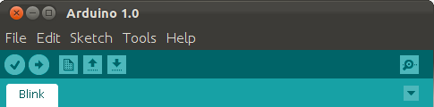
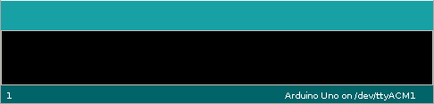

Click here to start the tutorial
You write your code here
These two buttons compile and step through the code
The arduino will show pin states when running
Serial output will be shown here
Virtual Arduino
Home
About
Github
Warning!
This tool is still under development

int led = 13; void setup() { Serial.begin(9600); pinMode(led, OUTPUT); } void loop() { digitalWrite(led, HIGH); Serial.println("LED on"); delay(1000); digitalWrite(led, LOW); Serial.println("LED off"); delay(1000); }
